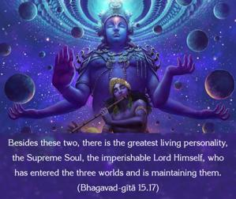
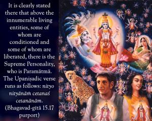
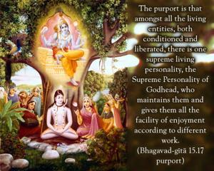

Besides these two, there is the greatest living personality, the Supreme Soul, the imperishable Lord Himself, who has entered the three worlds and is maintaining them.



The idea of this verse is very nicely expressed in the Kaṭha Upaniṣad (2.2.13) and Śvetāśvatara Upaniṣad (6.13). It is clearly stated there that above the innumerable living entities, some of whom are conditioned and some of whom are liberated, there is the Supreme Personality, who is Paramātmā. The Upaniṣadic verse runs as follows: nityo nityānāṁ cetanaś cetanānām. The purport is that amongst all the living entities, both conditioned and liberated, there is one supreme living personality, the Supreme Personality of Godhead, who maintains them and gives them all the facility of enjoyment according to different work. That Supreme Personality of Godhead is situated in everyone’s heart as Paramātmā. A wise man who can understand Him is eligible to attain perfect peace, not others.